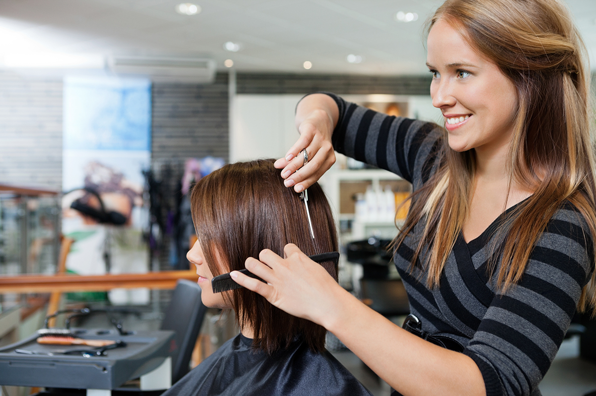
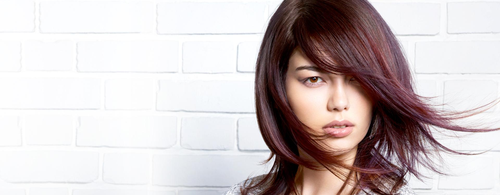
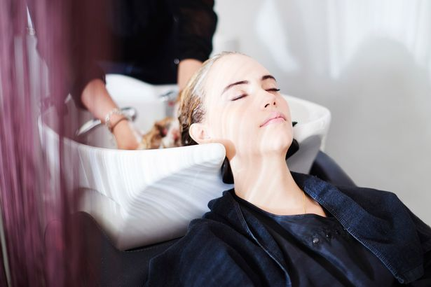
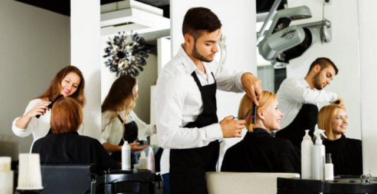
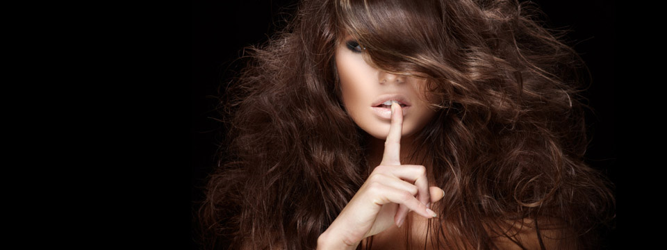

Инновации индустрии красоты

Волосы - это холст для работы стилиста, поэтому их идеальное состояние является залогом достижения наилучшего результата всех услуг в салонах красоты.
На данном сайте вы можете получить для себя полезную информацию, суть которой состоит в правильном уходе за волосами, информацию о новинках индустрии парикмахерского искусства.
Тенденции

Прически для деловых женщин: гладкий низкий пучок. Ни одна другая прическа не является такой надежной, как пучок. Сегодня сочетание гладких волос и пучка является очень модной. Просто нанесите гель (в количестве размером с грецкий орех) на волосы от корней до уровня ушей. Потом разделите волосы и зачешите его назад. Закрутите волосы в пучок на затылке.
Уход за волосами

Вашим волосам нравится, когда о нем заботятся с любовью. Ниже вы найдете лучшие советы по уходу и очистки длинных и кудрявых волос а также как придать вашим волосам потрясающего блеска.
1.Більшість людей доглядають за своєю шкірою з турботою і любов’ю, живлять її кремами і лосьйонами. Чому ж дехто вважає, що волоссю, щоб виглядати добре, вистачить лише миття? Щоб виглядати добре, йому теж потрібне зволоження.
2.Длинные волосы до плеч вырастает минимум за три года. За это время ему придется пережить до 300 моек. Поэтому оно требует правильного ухода. Вот девять советов для длинных волос.
3.Вьющиеся локоны – удивительное богатство, если вы правильно за ними ухаживаете. Слишком частое использование фена чрезмерно высушит вьющиеся волосы, а недостаточное забота сделает его непослушным. Вьющимся волосам также не нравится влажная погода. Узнайте, что вы можете сделать для своих натуральных локонов
Окрашивание

Каштановые волосы – окрашенные или натуральные – благодаря специальному уходу будет выглядеть более привлекательным и блестящим. Уход за ним не требует чрезмерных усилий, а наградой вам станут блеск, здоровье и более насыщенный цвет ваших волос.Защита от ультрафиолета для брюнеток почти так же важен, как для блондинок. Природные темные пигменты волос преобразовывают лучи солнца в тепло, под воздействием которого цвет волос может потерять насыщенность и глубину. Для окрашенных каштановых волос защита от ультрафиолетовых лучей является особенно важным: под действием УФ-лучей искусственные цветные пигменты тускнеют быстрее, чем природные. К тому же, длительное воздействие такого излучения повреждает структуру волос. После окрашивания каштановых волос за ним необходимо ухаживать с помощью специальных средств для окрашенных волос. Они одновременно заботятся о сохранении цвета и придают волосам блеск. Чтобы добавить блеска каштановом волосам и сделать их цвет более насыщенным, кроме специальных шампуней и кондиционеров вы можете пользоваться средствами, которые не смываются, например, спреями. Вода с содержанием хлора или меди может вызвать появление зеленоватого оттенка на светлом каштановом волосах. Большинство блондинок знают, как избавиться от: прополоскать волосы водой с растворенным в ней лимонным соком или несколькими таблетками аспирина. Каштановый цвет обычно теряет свой блеск между окрашиваниями. Чтобы избежать этого, можно пользоваться кремом для тонирования, не содержит аммиака. Он легко смывается, не изменяя, но лишь подчеркивая цвет волос, придает ему глубину и теплый блеск. Природные масла, например масла, арагану или косточек абрикоса, помогают защитить и восстановить волосы. Для брюнеток использования этих масел – идеальный путь к ухоженному и блестящих волос. Лучших результатов вы добьетесь, если будете пользоваться этими природными средствами регулярно.
| Вид услуги |
Технология действия |
Действие |
Длительность процедуры |
| FIBREPLEX |
Технология Fibre Bond
Tехнология Fibre Bond 4.5 |
Укрепление связей
во время осветления,
обесцвечивания,
окрашивания + создание cвязей |
Не требуется дополнительного
времени на окрашивание;
процедура по уходу 10 мин - 20 мин |
| BC FIBRE FORCE |
Tехнология Bond Connector |
Защита цвета |
15 мин. |
| BC COLOR FREEZE |
4.5 pH Perfect Технология |
15 мин |
| Всего посещений |
273 |
Полезные советы

Качественная помощь поврежденным волосам Секущиеся кончики и сухие волосы требуют неотложной помощи. Мы знаем, как превратить поврежденные волосы на сильное и здоровое. Да и истощенный волос нуждается в защите.Проверенные временем советы и рекомендации Желаете распрямить свое вьющиеся волосы? Что-то не так с цветом волос после окрашивания? Ищете советы и рекомендации для причесок, поврежденных шляпой или капюшоном? Интересуетесь, как пользоваться лаком, чтобы он не обременял волос? Здесь вы найдете лучшие советы и рекомендации, которые помогут вам решить проблемы с волосами.
Мода проходит, стиль остаётся. © (Коко Шанель)